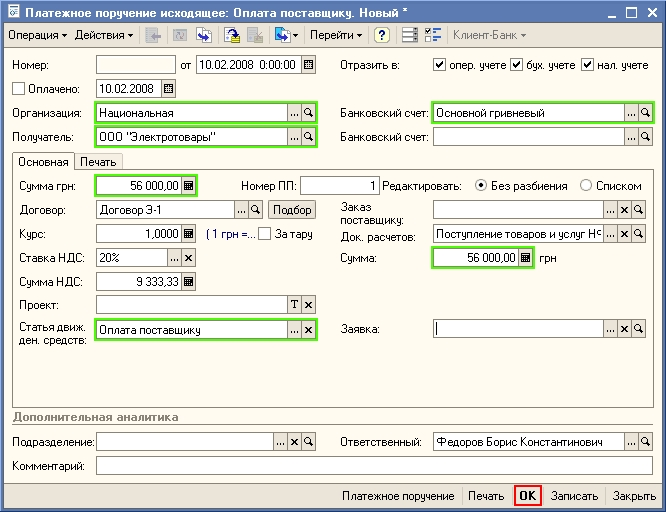
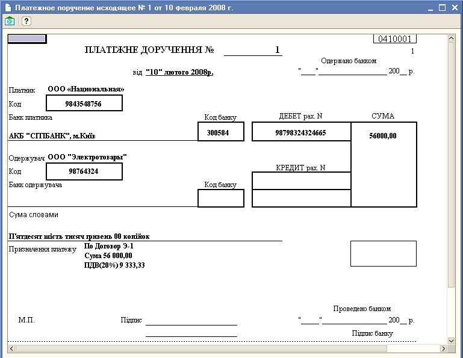
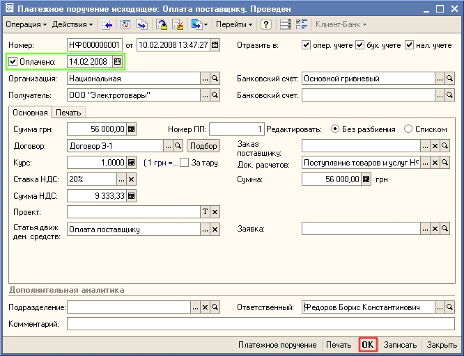

Списание денежных средств с текущего счета организации отражается в программе «Управление торговлей для Украины» документом Платежное поручение исходящее.
1. Создайте документ Платежное поручение исходящее на основании документа Поступление товаров и услуг.
Для этого в списке документов Поступление товаров и услуг выделите созданный ранее документ и нажмите на кнопку  (или щелкните правой кнопкой мыши и в открывшемся меню выберите На основании). Выберите в предложенном списке — Платежное поручение исходящее.
(или щелкните правой кнопкой мыши и в открывшемся меню выберите На основании). Выберите в предложенном списке — Платежное поручение исходящее.

Автоматически будет создан новый документ Платежное поручение исходящее. В документе на основании данных документа Поступление товаров и услуг заполнены все основные реквизиты.
ПРИМЕЧАНИЕ
Реквизит Банковский счет заполняется автоматически в том случае, если он указан в качестве основного банковского счета в карточке Организации. Если у организации несколько банковских счетов, то нужный банковский счет можно выбрать непосредственно в форме платежного поручения.
Печать платежного поручения
Из документа Платежное поручение исходящее выводится форма платежного поручения для печати и передачи его в банк.
1. Нажмите кнопку Записать в нижней части формы документа Платежное поручение исходящее.
2. Нажмите кнопку Платежное поручение для получения печатной формы платежного поручения.

| ПРИМЕЧАНИЕ Текст Назначение платежа формируется автоматически на основании данных, введенных в платежное поручение. Изменить текст Назначение платежа можно на закладке Печать платежного поручения. |
3. Закройте печатную форму платежного поручения.
4. Установите флажок Оплачено в форме документа и дату фактического перечисления банком денежных средств поставщику.

| ПРИМЕЧАНИЕ Если флаг Оплачено установлен, то при проведении документа будут изменены взаиморасчеты с поставщиком и зафиксировано списание денежных средств с текущего счета. Если флаг не установлен, то при проведении документа фиксируется факт планируемого расхода денежных средств с текущего счета. |
| СОВЕТ Признак оплаты платежных поручений удобно устанавливать с помощью обработки Выписка банка. Для этого нужно открыть список банковских выписок (меню Документы - Денежные средства - Банк- Выписка банка), добавить в список новую выписку, в которой указать организацию, текущий счет и дату выписки. Далее в форме выписки следует нажать кнопку Заполнить- будет отобран список всех платежных поручений, оплата которых не была отражена ранее в информационной базе. В списке документов нужно отметить флажками оплаченные платежные поручения (в соответствии с полученной выпиской банка) и нажать кнопку Выполнить. Отмеченным платежным поручениям автоматически будет установлен признак оплаты. |
5. Нажмите кнопку ОК в нижней части формы документа Платежное поручение исходящее для проведения документа и закрытия формы.
Только что Вы научились отражать в программе оплату поставщику.
Из следующего раздела Вы узнаете, как оформлять расход денежных средств с предварительным утверждением заявки на расходование денежных средств.
Следующий раздел: «Оформление заявки на расходование денежных средств»